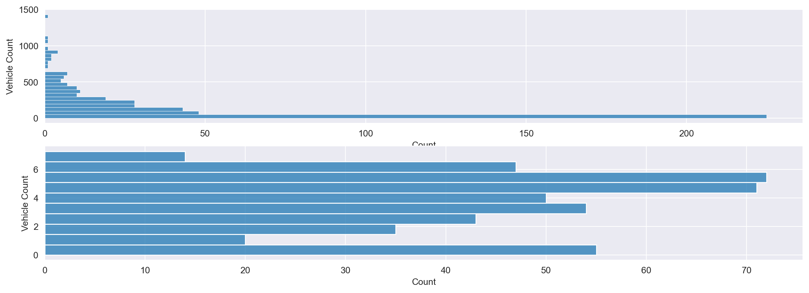
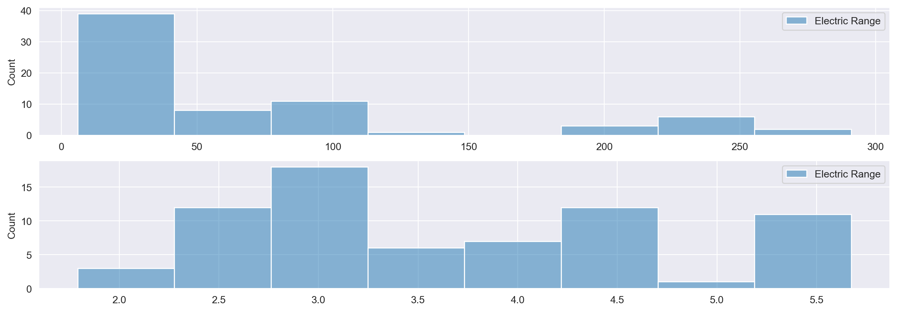
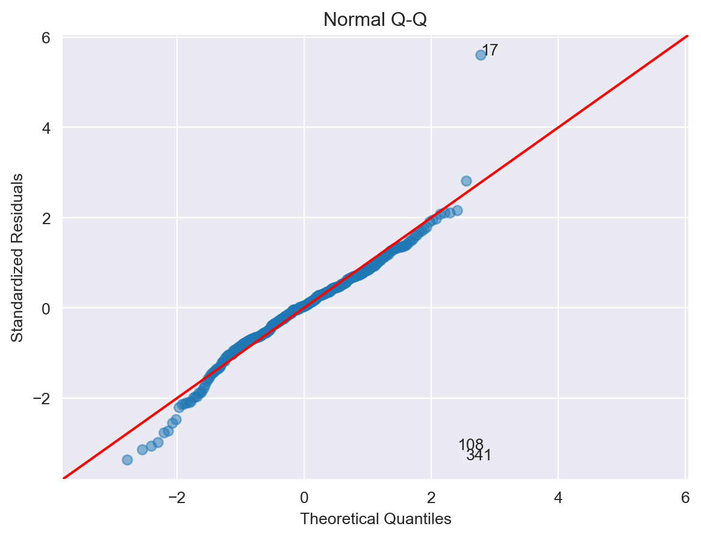
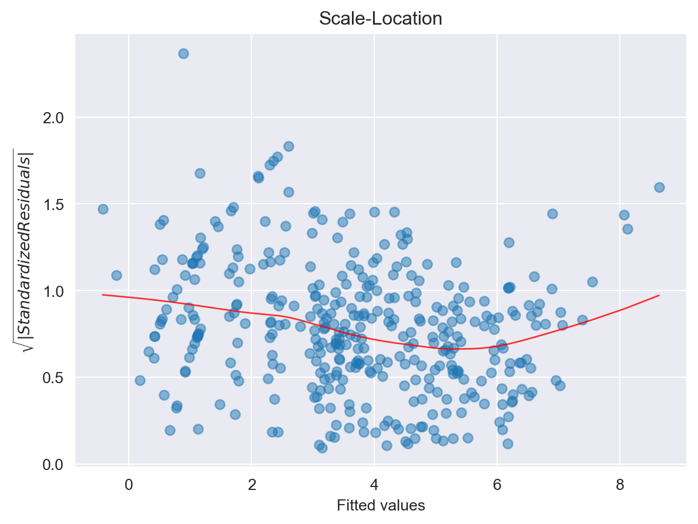
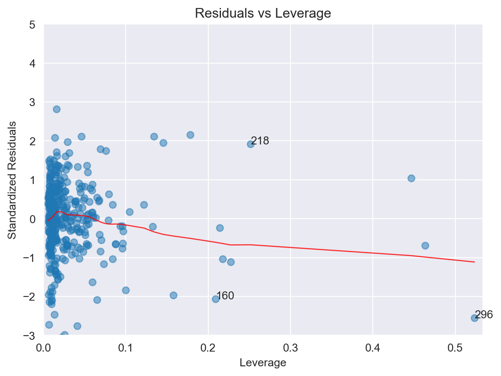
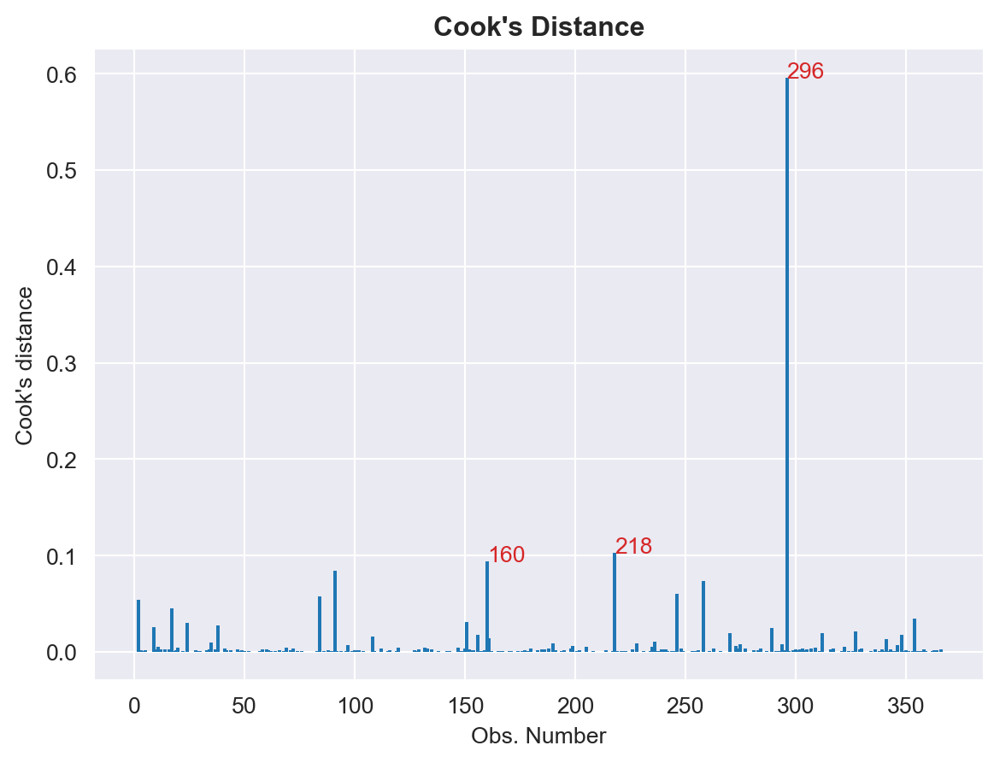

#load needed packages. make sure they are installed.
from pandas import read_csv, set_option, merge, DataFrame, concat
import numpy as np
import matplotlib.pyplot as plt
import seaborn as sns
from sklearn.model_selection import train_test_split
from sklearn.linear_model import LinearRegression, LogisticRegression
from sklearn.preprocessing import LabelEncoder, StandardScaler
from sklearn.metrics import accuracy_score
import statsmodels.api as sm
import statsmodels
from statsmodels.graphics.gofplots import ProbPlot
set_option('display.max_columns', None)EV Exploratory Data Analysis
Setup
Load the data.
base_dir = '../../'
df = read_csv(base_dir + 'data/processed-data/brand_model_year_tax_data.csv')
columns_list = df.columns.tolist()
for i in columns_list:
print(i.strip())
numeric_cols = columns_list[28:]City
State
ZIPCODE
Model Year
Make
Model
Electric Vehicle Type
Clean Alternative Fuel Vehicle (CAFV) Eligibility
Electric Range
Vehicle Count
The State Federal Information Processing System (FIPS) code
The State associated with the ZIP code
Number of returns [3]
Number of single returns
Number of joint returns
Number of head of household returns
Number of electronically filed returns
Number of computer prepared paper returns
Number of returns with paid preparer's signature
Number of returns with direct deposit
Number of returns with virtual currency indicator
Number of individuals [4]
Total number of volunteer prepared returns [5]
Number of volunteer income tax assistance (VITA) prepared returns [5]
Number of tax counseling for the elderly (TCE) prepared returns [5]
Number of volunteer prepared returns with Earned Income Credit [5]
Number of refund anticipation check returns [6]
Number of elderly returns [7]
Adjust gross income (AGI) [8]
Total income amount
Salaries and wages amount
Taxable interest amount
Ordinary dividends amount
Qualified dividends amount [9]
State and local income tax refunds amount
Business or professional net income (less loss) amount
Net capital gain (less loss) amount
Taxable individual retirement arrangements distributions amount
Taxable pensions and annuities amount
Number of farm returns
Unemployment compensation amount [10]
Taxable Social Security benefits amount
Partnership/S-corp net income (less loss) amount
Total statutory adjustments amount
Educator expenses amount
Self-employed (Keogh) retirement plans amount
Self-employed health insurance deduction amount
Individual retirement arrangement payments amount
Student loan interest deduction amount
Charitable contributions if took standard deduction
Total standard deduction amount
Basic standard deduction amount
Additional standard deduction amount
Total itemized deductions amount
Amount of AGI for itemized returns
Total medical and dental expense deduction amount
State and local income taxes amount
State and local general sales tax amount
Real estate taxes amount
Personal property taxes amount
Limited state and local taxes
Total taxes paid amount
Home mortgage interest paid amount
Home mortgage from personal seller amount
Deductible points amount
Qualified mortgage insurance premiums amount
Investment interest paid amount
Total charitable contributions amount
Other non-limited miscellaneous deductions amount
Qualified business income deduction
Taxable income amount
Income tax before credits amount
Alternative minimum tax amount
Excess advance premium tax credit repayment amount
Total tax credits amount
Foreign tax credit amount
Child and dependent care credit amount
Nonrefundable education credit amount
Retirement savings contribution credit amount
Nonrefundable child and other dependent credit amount
Residential energy tax credit amount
Self-employment tax amount
Total premium tax credit amount
Advance premium tax credit amount
Total tax payments amount
Earned income credit amount [12]
Excess earned income credit (refundable) amount [13]
Refundable child tax credit or additional child tax credit amount
Refundable education credit amount
Net premium tax credit amount
Qualified sick and family leave credit for leave taken before April 1, 2021 amount
Refundable child and dependent care credit
Qualified sick and family leave credit for leave taken after March 31, 2021
Recovery rebate credit amount [15]
Economic impact payment third round amount [16, 17]
Income tax after credits amount
Total tax liability amount [18]
Additional Medicare tax amount
Net investment income tax amount
Tax due at time of filing amount [19]
Total overpayments amount
Overpayments refunded amount [20]
Credited to next year’s estimated tax amountVehicle Brand Aggregation
sns.set_style('darkgrid')
zip_code_count = df.groupby(['ZIPCODE']).agg({
'Vehicle Count': 'sum',
}).reset_index()
fig, axes = plt.subplots(2, 1, figsize=(15,5))
sns.histplot(ax=axes[0], data=zip_code_count, y=zip_code_count['Vehicle Count'])
log_zip_code_count = zip_code_count.copy()
log_zip_code_count['Vehicle Count'] = np.log(zip_code_count['Vehicle Count'])
sns.histplot(ax=axes[1], data=log_zip_code_count, y=log_zip_code_count['Vehicle Count'])<Axes: xlabel='Count', ylabel='Vehicle Count'>
fig, axes = plt.subplots(2, 1, figsize=(15,5))
sns.boxplot(ax=axes[0], data=zip_code_count, x=zip_code_count['Vehicle Count'])
log_zip_code_count = zip_code_count.copy()
log_zip_code_count['Vehicle Count'] = np.log(zip_code_count['Vehicle Count'])
sns.boxplot(ax=axes[1], data=log_zip_code_count, x=log_zip_code_count['Vehicle Count'])<Axes: xlabel='Vehicle Count'>
Mean
brand_df = df.groupby(['Model']).mean(numeric_only=True)['Electric Range'].reset_index().sort_values('Electric Range', ascending=False).reset_index(drop=True)
fig, axes = plt.subplots(2, 1, figsize=(15,5))
sns.histplot(ax=axes[0], data=brand_df)
brand_df['Electric Range'] = np.log(brand_df['Electric Range'])
sns.histplot(ax=axes[1], data=brand_df)<Axes: ylabel='Count'>
new_brand_df = df.groupby(['Model']).mean(numeric_only=True)['Electric Range'].reset_index().sort_values('Electric Range', ascending=False).reset_index(drop=True)
fig, axes = plt.subplots(2, 1, figsize=(15,5))
sns.boxplot(ax=axes[0], data=new_brand_df)
new_brand_df['Electric Range'] = np.log(new_brand_df['Electric Range'])
sns.boxplot(ax=axes[1], data=new_brand_df)<Axes: >
ZIP CODE ONLY
amount_brand_df = df.groupby(['ZIPCODE'])[numeric_cols].mean(numeric_only=True).reset_index()
brand_df = df.groupby(['ZIPCODE']).agg({
'Vehicle Count': 'sum',
'Electric Range': 'mean'
}).reset_index()
merged_df = merge(brand_df, amount_brand_df, on=['ZIPCODE'])
label_encoder = LabelEncoder()
# label_encoder.fit(merged_df['Make'])
# encoded_labels = label_encoder.transform(merged_df['Make'])
# merged_df['Make'] = encoded_labels
# merged_df['Vehicle Count'] = np.log(merged_df['Vehicle Count'])
# print(merged_df)
# Q1 = np.percentile(merged_df['Vehicle Count'], 25, method='midpoint')
# Q3 = np.percentile(merged_df['Vehicle Count'], 75, method='midpoint')
# IQR = Q3 - Q1
# print(IQR)
# # Above Upper bound
# upper = Q3+1.5*IQR
# # upper_array = np.where(merged_df['Vehicle Count'] >= upper)[0]
# upper_array = np.array(merged_df['Vehicle Count'] >= upper)
# print("Upper Bound:", upper)
# print(upper_array.sum())
# # Below Lower bound
# lower = Q1-1.5*IQR
# # lower_array = np.where(merged_df['Vehicle Count'] <= lower)[0]
# lower_array = np.array(merged_df['Vehicle Count'] <= lower)
# print("Lower Bound:", lower)
# print(lower_array.sum())
X_df = merged_df
Y_df = merged_df[['Vehicle Count']]
Y_df = np.log(Y_df)
X_df = merged_df.drop(['Vehicle Count', 'Electric Range', 'ZIPCODE'], axis=1)
X = np.array(X_df)
x = sm.add_constant(X)
Y = np.array(Y_df)
X_train, X_test, y_train, y_test = train_test_split(x,Y,
random_state=104,
test_size=0.2,
shuffle=True)
model = sm.OLS(y_train, X_train)
results = model.fit()
results.summary()
p_values = results.pvalues
p_df = DataFrame()
p_df['Feature'] = X_df.columns
p_df['p-value'] = results.pvalues[1:]
feat_list = []
p_val_list = []
for idx, row in p_df.iterrows():
if row['p-value'] < .05:
feat_list.append(row['Feature'])
p_val_list.append(row['p-value'])
else:
continue
new_p_df = DataFrame()
new_p_df['Feature'] = feat_list
new_p_df['p-value'] = p_val_list
X = np.array(X_df[new_p_df['Feature']])
Y = np.array(Y_df)
x = sm.add_constant(X)
X_train, X_test, y_train, y_test = train_test_split(x,Y,
random_state=104,
test_size=0.2,
shuffle=True)
model2 = sm.OLS(y_train, X_train)
results2 = model2.fit()
results2.summary()
p3_values = results2.pvalues
new3 = DataFrame()
new3['Feature'] = new_p_df['Feature']
new3['p-value'] = p3_values[1:]
new3
feat_list3 = []
p_val_list3 = []
for idx, row in new3.iterrows():
if row['p-value'] < .05:
feat_list3.append(row['Feature'])
p_val_list3.append(row['p-value'])
else:
continue
final3_df = DataFrame()
final3_df['Feature'] = feat_list3
final3_df['p-value'] = p_val_list3
final3_df
X = X_df[final3_df['Feature']]
Y = Y_df
x = sm.add_constant(X)
X_train, X_test, y_train, y_test = train_test_split(x,Y,
random_state=104,
test_size=0.2,
shuffle=True)
model3 = sm.OLS(y_train, X_train)
results3 = model3.fit()
Y_pred = results3.predict(X_train).astype(int)
features = ['constant'] + final3_df['Feature'].tolist()
X = DataFrame(X_train, columns=features)
Y = DataFrame(y_train, columns=['Vehicle Count'])
dataframe = concat([X, Y], axis=1)
results3.summary()| Dep. Variable: | Vehicle Count | R-squared: | 0.845 |
| Model: | OLS | Adj. R-squared: | 0.840 |
| Method: | Least Squares | F-statistic: | 176.8 |
| Date: | Fri, 21 Jun 2024 | Prob (F-statistic): | 7.31e-137 |
| Time: | 11:50:53 | Log-Likelihood: | -424.05 |
| No. Observations: | 368 | AIC: | 872.1 |
| Df Residuals: | 356 | BIC: | 919.0 |
| Df Model: | 11 | ||
| Covariance Type: | nonrobust |
| coef | std err | t | P>|t| | [0.025 | 0.975] | |
| const | 2.7171 | 0.089 | 30.513 | 0.000 | 2.542 | 2.892 |
| Adjust gross income (AGI) [8] | 5499.1220 | 436.158 | 12.608 | 0.000 | 4641.351 | 6356.893 |
| Total income amount | -5499.1220 | 436.158 | -12.608 | 0.000 | -6356.893 | -4641.351 |
| Taxable pensions and annuities amount | 6.621e-06 | 3.55e-06 | 1.866 | 0.063 | -3.57e-07 | 1.36e-05 |
| Total statutory adjustments amount | 5499.1221 | 436.158 | 12.608 | 0.000 | 4641.351 | 6356.893 |
| Total standard deduction amount | -0.0614 | 0.014 | -4.436 | 0.000 | -0.089 | -0.034 |
| Basic standard deduction amount | 0.0614 | 0.014 | 4.437 | 0.000 | 0.034 | 0.089 |
| Additional standard deduction amount | 0.0613 | 0.014 | 4.428 | 0.000 | 0.034 | 0.088 |
| State and local general sales tax amount | 0.0002 | 4.78e-05 | 4.814 | 0.000 | 0.000 | 0.000 |
| Home mortgage from personal seller amount | -0.0012 | 0.000 | -2.488 | 0.013 | -0.002 | -0.000 |
| Alternative minimum tax amount | -0.0005 | 9.45e-05 | -5.048 | 0.000 | -0.001 | -0.000 |
| Child and dependent care credit amount | -0.0057 | 0.002 | -3.099 | 0.002 | -0.009 | -0.002 |
| Omnibus: | 31.404 | Durbin-Watson: | 1.982 |
| Prob(Omnibus): | 0.000 | Jarque-Bera (JB): | 141.029 |
| Skew: | 0.007 | Prob(JB): | 2.38e-31 |
| Kurtosis: | 6.033 | Cond. No. | 4.39e+10 |
Notes:
[1] Standard Errors assume that the covariance matrix of the errors is correctly specified.
[2] The condition number is large, 4.39e+10. This might indicate that there are
strong multicollinearity or other numerical problems.
#
# model values
model_fitted_y = results3.fittedvalues
# model residuals
model_residuals = results3.resid
# normalized residuals
model_norm_residuals = results3.get_influence().resid_studentized_internal
# absolute squared normalized residuals
model_norm_residuals_abs_sqrt = np.sqrt(np.abs(model_norm_residuals))
# absolute residuals
model_abs_resid = np.abs(model_residuals)
# leverage, from statsmodels internals
model_leverage = results3.get_influence().hat_matrix_diag
# cook's distance, from statsmodels internals
model_cooks = results3.get_influence().cooks_distance[0]
plot_lm_1 = plt.figure()
plot_lm_1.axes[0] = sns.residplot(x=model_fitted_y, y=dataframe.columns[-1], data=dataframe,
lowess=True,
scatter_kws={'alpha': 0.5},
line_kws={'color': 'red', 'lw': 1, 'alpha': 0.8})
plot_lm_1.axes[0].set_title('Residuals vs Fitted')
plot_lm_1.axes[0].set_xlabel('Fitted values')
plot_lm_1.axes[0].set_ylabel('Residuals')Text(0, 0.5, 'Residuals')
Normal Q-Q Plot
This plot shows if the residuals are normally distributed. A good normal QQ plot has all of the residuals lying on or close to the red line.
QQ = ProbPlot(model_norm_residuals)
plot_lm_2 = QQ.qqplot(line='45', alpha=0.5, color='#4C72B0', lw=1)
plot_lm_2.axes[0].set_title('Normal Q-Q')
plot_lm_2.axes[0].set_xlabel('Theoretical Quantiles')
plot_lm_2.axes[0].set_ylabel('Standardized Residuals')
# annotations
abs_norm_resid = np.flip(np.argsort(np.abs(model_norm_residuals)), 0)
abs_norm_resid_top_3 = abs_norm_resid[:3]
for r, i in enumerate(abs_norm_resid_top_3):
plot_lm_2.axes[0].annotate(i,
xy=(np.flip(QQ.theoretical_quantiles, 0)[r],
model_norm_residuals[i]))
Scale-Location
This plot is a way to check if the residuals suffer from non-constant variance, aka heteroscedasticity.
plot_lm_3 = plt.figure()
plt.scatter(model_fitted_y, model_norm_residuals_abs_sqrt, alpha=0.5)
sns.regplot(
x=model_fitted_y,
y=model_norm_residuals_abs_sqrt,
scatter=False,
ci=False,
lowess=True,
line_kws={'color': 'red', 'lw': 1, 'alpha': 0.8})
plot_lm_3.axes[0].set_title('Scale-Location')
plot_lm_3.axes[0].set_xlabel('Fitted values')
plot_lm_3.axes[0].set_ylabel('$\sqrt{|Standardized Residuals|}$')
# annotations
abs_sq_norm_resid = np.flip(np.argsort(model_norm_residuals_abs_sqrt), 0)
abs_sq_norm_resid_top_3 = abs_sq_norm_resid[:3]
# for r, i in enumerate(abs_sq_norm_resid_top_3):
# plot_lm_3.axes[0].annotate(
# i,
# xy=(model_fitted_y[i],
# model_norm_residuals_abs_sqrt[i]))
Residuals vs. Leverage
Unlike outliers, which have an unusually large y value, leverage points have extreme x values. This may not seem so bad at face value, but it can have damaging effects on the model because the β coefficients are very sensitive to leverage points. The purpose of the Residuals vs Leverage plot is to identify these problematic observations.
plot_lm_4 = plt.figure()
plt.scatter(model_leverage, model_norm_residuals, alpha=0.5)
sns.regplot(x=model_leverage, y=model_norm_residuals,
scatter=False,
ci=False,
lowess=True,
line_kws={'color': 'red', 'lw': 1, 'alpha': 0.8})
plot_lm_4.axes[0].set_xlim(0, max(model_leverage)+0.01)
plot_lm_4.axes[0].set_ylim(-3, 5)
plot_lm_4.axes[0].set_title('Residuals vs Leverage')
plot_lm_4.axes[0].set_xlabel('Leverage')
plot_lm_4.axes[0].set_ylabel('Standardized Residuals')
# annotations
leverage_top_3 = np.flip(np.argsort(model_cooks), 0)[:3]
for i in leverage_top_3:
plot_lm_4.axes[0].annotate(i,
xy=(model_leverage[i],
model_norm_residuals[i]))
def cookdplot(model, ax=None):
if ax is None:
fig, ax = plt.subplots()
cooks_d = model.get_influence().cooks_distance[0]
ax.vlines(range(len(cooks_d)),0,cooks_d)
# annotations
cookd_top_3 = np.flip(np.argsort(cooks_d), 0)[:3]
for i in cookd_top_3:
ax.annotate(i, xy=(i, cooks_d[i]),color = 'C3')
ax.set_title("Cook's Distance" , fontweight="bold")
ax.set_xlabel('Obs. Number')
ax.set_ylabel("Cook's distance")
return ax
cookdplot(results3)
plt.show()
SECOND MODEL
X_df = merged_df.copy()
Y_df = np.log(merged_df[['Vehicle Count']])
# Y_df = np.log(Y_df['Vehicle Count'])
X_features = [
# 'Adjust gross income (AGI) [8]',
# 'Total income amount',
'Taxable pensions and annuities amount',
'Total statutory adjustments amount',
# 'Total standard deduction amount',
# 'Basic standard deduction amount',
# 'Additional standard deduction amount',
'State and local general sales tax amount',
'Home mortgage from personal seller amount',
'Alternative minimum tax amount',
# 'Child and dependent care credit amount'
]
X_df = X_df[X_features]
feat_list = []
log_list = []
for feat in X_features:
feat_list.append(feat)
log_list.append(np.log(X_df[feat]))
print(log_list)
print(feat_list)
# X_features = ['ZIPCODE',
# 'Adjust gross income (AGI) [8]',
# 'Total income amount',
# 'Total statutory adjustments amount',
# 'Home mortgage from personal seller amount',
# 'Alternative minimum tax amount']
X = np.array(X_df[X_features])
Y = np.array(Y_df)
x = sm.add_constant(X)
X_train, X_test, y_train, y_test = train_test_split(x,Y,
random_state=104,
test_size=0.2,
shuffle=True)
model = sm.OLS(y_train, X_train)
results2mod = model.fit()
# Y_pred = results2mod.predict(X_test).astype(int)
results2mod.summary()
model1 = LinearRegression().fit(X_train, y_train)
model1.score(X_train, y_train)
# model1.score(X_test, y_test)
results2mod.summary()
# X = DataFrame(X_train, columns=['constant'] + X_features)
# Y = DataFrame(y_train, columns=['Vehicle Count'])
# dataframe = concat([X, Y], axis=1)
# results2mod.summary()
# model.coef_
# model.intercept_
# Y_pred = model.predict(X_test)
# plt.scatter(x=y_test, y=Y_pred)
# plt.plot(y_test, Y_pred, color='red')
# sns.regplot(x=y_test, y=Y_pred)[0 11.392056
1 10.842166
2 11.360508
3 11.350512
4 10.579311
...
456 8.270269
457 8.647344
458 11.750682
459 8.867709
460 11.086012
Name: Taxable pensions and annuities amount, Length: 461, dtype: float64, 0 9.290445
1 8.745921
2 9.428270
3 10.674012
4 9.665357
...
456 6.349139
457 6.665684
458 9.768183
459 6.875232
460 8.843182
Name: Total statutory adjustments amount, Length: 461, dtype: float64, 0 8.436417
1 7.504942
2 8.281724
3 9.393911
4 8.682877
...
456 4.094345
457 4.276666
458 7.853216
459 3.555348
460 6.186209
Name: State and local general sales tax amount, Length: 461, dtype: float64, 0 6.156979
1 -inf
2 5.017280
3 7.681560
4 6.493754
...
456 -inf
457 -inf
458 -inf
459 -inf
460 -inf
Name: Home mortgage from personal seller amount, Length: 461, dtype: float64, 0 -inf
1 -inf
2 -inf
3 8.875986
4 7.290975
...
456 -inf
457 -inf
458 6.107023
459 -inf
460 -inf
Name: Alternative minimum tax amount, Length: 461, dtype: float64]
['Taxable pensions and annuities amount', 'Total statutory adjustments amount', 'State and local general sales tax amount', 'Home mortgage from personal seller amount', 'Alternative minimum tax amount']| Dep. Variable: | y | R-squared: | 0.724 |
| Model: | OLS | Adj. R-squared: | 0.720 |
| Method: | Least Squares | F-statistic: | 189.5 |
| Date: | Fri, 21 Jun 2024 | Prob (F-statistic): | 9.63e-99 |
| Time: | 11:50:55 | Log-Likelihood: | -530.80 |
| No. Observations: | 368 | AIC: | 1074. |
| Df Residuals: | 362 | BIC: | 1097. |
| Df Model: | 5 | ||
| Covariance Type: | nonrobust |
| coef | std err | t | P>|t| | [0.025 | 0.975] | |
| const | 2.0197 | 0.079 | 25.433 | 0.000 | 1.864 | 2.176 |
| x1 | 1.222e-05 | 2.35e-06 | 5.207 | 0.000 | 7.6e-06 | 1.68e-05 |
| x2 | 0.0001 | 2.24e-05 | 5.943 | 0.000 | 8.9e-05 | 0.000 |
| x3 | 0.0003 | 5.81e-05 | 5.116 | 0.000 | 0.000 | 0.000 |
| x4 | -0.0018 | 0.001 | -3.276 | 0.001 | -0.003 | -0.001 |
| x5 | -0.0005 | 0.000 | -4.337 | 0.000 | -0.001 | -0.000 |
| Omnibus: | 14.258 | Durbin-Watson: | 1.870 |
| Prob(Omnibus): | 0.001 | Jarque-Bera (JB): | 14.833 |
| Skew: | -0.468 | Prob(JB): | 0.000601 |
| Kurtosis: | 2.697 | Cond. No. | 9.47e+04 |
Notes:
[1] Standard Errors assume that the covariance matrix of the errors is correctly specified.
[2] The condition number is large, 9.47e+04. This might indicate that there are
strong multicollinearity or other numerical problems.
_# model values
model_fitted_y = results2mod.fittedvalues
# model residuals
model_residuals = results2mod.resid
# normalized residuals
model_norm_residuals = results2mod.get_influence().resid_studentized_internal
# absolute squared normalized residuals
model_norm_residuals_abs_sqrt = np.sqrt(np.abs(model_norm_residuals))
# absolute residuals
model_abs_resid = np.abs(model_residuals)
# leverage, from statsmodels internals
model_leverage = results2mod.get_influence().hat_matrix_diag
# cook's distance, from statsmodels internals
model_cooks = results2mod.get_influence().cooks_distance[0]
plot_lm_1 = plt.figure()
plot_lm_1.axes[0] = sns.residplot(x=model_fitted_y, y=dataframe.columns[-1], data=dataframe,
lowess=True,
scatter_kws={'alpha': 0.5},
line_kws={'color': 'red', 'lw': 1, 'alpha': 0.8})
plot_lm_1.axes[0].set_title('Residuals vs Fitted')
plot_lm_1.axes[0].set_xlabel('Fitted values')
plot_lm_1.axes[0].set_ylabel('Residuals')Text(0, 0.5, 'Residuals')
Normal Q-Q Plot
This plot shows if the residuals are normally distributed. A good normal QQ plot has all of the residuals lying on or close to the red line.
QQ = ProbPlot(model_norm_residuals)
plot_lm_2 = QQ.qqplot(line='45', alpha=0.5, color='#4C72B0', lw=1)
plot_lm_2.axes[0].set_title('Normal Q-Q')
plot_lm_2.axes[0].set_xlabel('Theoretical Quantiles')
plot_lm_2.axes[0].set_ylabel('Standardized Residuals')
# annotations
abs_norm_resid = np.flip(np.argsort(np.abs(model_norm_residuals)), 0)
abs_norm_resid_top_3 = abs_norm_resid[:3]
for r, i in enumerate(abs_norm_resid_top_3):
plot_lm_2.axes[0].annotate(i,
xy=(np.flip(QQ.theoretical_quantiles, 0)[r],
model_norm_residuals[i]))
Scale-Location
This plot is a way to check if the residuals suffer from non-constant variance, aka heteroscedasticity.
plot_lm_3 = plt.figure()
plt.scatter(model_fitted_y, model_norm_residuals_abs_sqrt, alpha=0.5)
sns.regplot(
x=model_fitted_y,
y=model_norm_residuals_abs_sqrt,
scatter=False,
ci=False,
lowess=True,
line_kws={'color': 'red', 'lw': 1, 'alpha': 0.8})
plot_lm_3.axes[0].set_title('Scale-Location')
plot_lm_3.axes[0].set_xlabel('Fitted values')
plot_lm_3.axes[0].set_ylabel('$\sqrt{|Standardized Residuals|}$')
# annotations
abs_sq_norm_resid = np.flip(np.argsort(model_norm_residuals_abs_sqrt), 0)
abs_sq_norm_resid_top_3 = abs_sq_norm_resid[:3]
for r, i in enumerate(abs_sq_norm_resid_top_3):
plot_lm_3.axes[0].annotate(
i,
xy=(model_fitted_y[i],
model_norm_residuals_abs_sqrt[i]))
Residuals vs. Leverage
Unlike outliers, which have an unusually large y value, leverage points have extreme x values. This may not seem so bad at face value, but it can have damaging effects on the model because the β coefficients are very sensitive to leverage points. The purpose of the Residuals vs Leverage plot is to identify these problematic observations.
plot_lm_4 = plt.figure()
plt.scatter(model_leverage, model_norm_residuals, alpha=0.5)
sns.regplot(x=model_leverage, y=model_norm_residuals,
scatter=False,
ci=False,
lowess=True,
line_kws={'color': 'red', 'lw': 1, 'alpha': 0.8})
plot_lm_4.axes[0].set_xlim(0, max(model_leverage)+0.01)
plot_lm_4.axes[0].set_ylim(-3, 5)
plot_lm_4.axes[0].set_title('Residuals vs Leverage')
plot_lm_4.axes[0].set_xlabel('Leverage')
plot_lm_4.axes[0].set_ylabel('Standardized Residuals')
# annotations
leverage_top_3 = np.flip(np.argsort(model_cooks), 0)[:3]
for i in leverage_top_3:
plot_lm_4.axes[0].annotate(i,
xy=(model_leverage[i],
model_norm_residuals[i]))
def cookdplot(model, ax=None):
if ax is None:
fig, ax = plt.subplots()
cooks_d = model.get_influence().cooks_distance[0]
ax.vlines(range(len(cooks_d)),0,cooks_d)
# annotations
cookd_top_3 = np.flip(np.argsort(cooks_d), 0)[:3]
for i in cookd_top_3:
ax.annotate(i, xy=(i, cooks_d[i]),color = 'C3')
ax.set_title("Cook's Distance" , fontweight="bold")
ax.set_xlabel('Obs. Number')
ax.set_ylabel("Cook's distance")
return ax
cookdplot(results2mod)
plt.show()